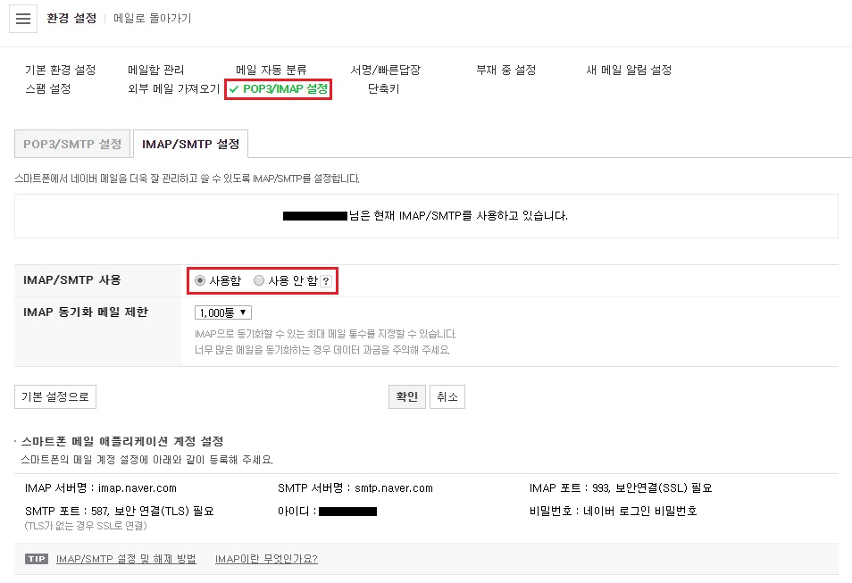
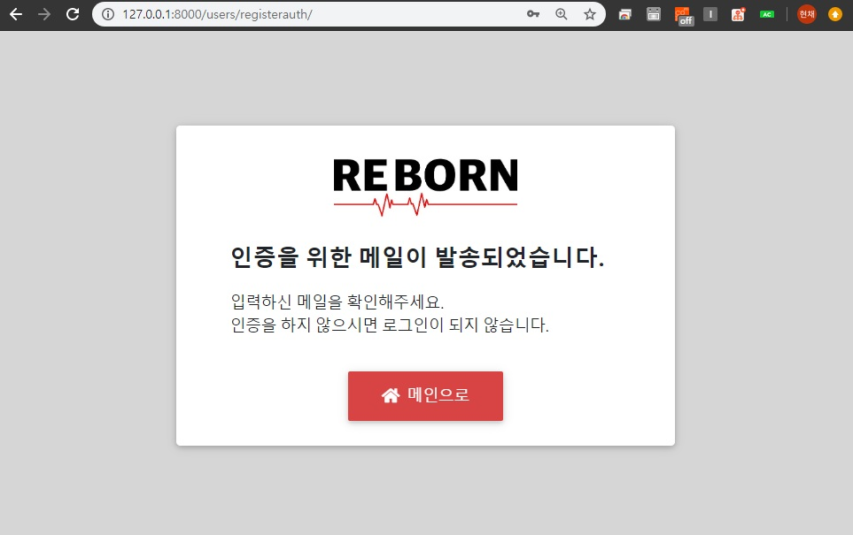
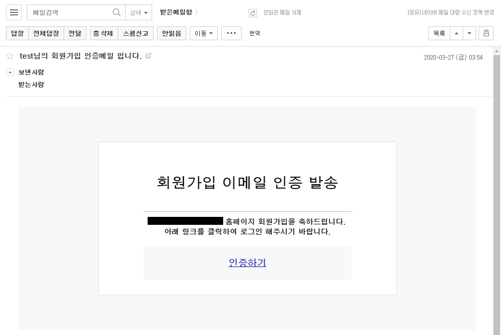

2020-03-26
Django 08. SMTP 회원가입 인증메일 구현
Naver의 SMTP서버와 Django send_mail, token을 사용하여 회원가입 인증메일을 구현합니다.
1. 네이버 SMTP 서버 설정 메일 전송을 구현하기 위해 네이버 메일로 들어가 SMTP 서버를 설정합니다.
*Google 또한 SMTP 서버를 제공하지만 Gmail 보안상의 이유로 렌더링하는 메일 html스타일에 href 경로가 존재하면 3~4분의 딜레이가 생기게 됩니다. 이 프로젝트에서는 토큰값이 담긴 href를 메일로 보내 인증하는 방식이기에 딜레이가 발생하는 Google SMTP를 사용하지 않고 Naver SMTP를 사용합니다.
네이버 메일의 환경설정에서 POP3/IMAP 설정으로 들어가 IMAP/SMTP 사용설정을 사용함 으로 변경합니다.

settings.py 에 아래의 소스를 입력합니다.
1 2 3 4 5 6 7 8 9 # cs_web/settings.py EMAIL_BACKEND = 'django.core.mail.backends.smtp.EmailBackend' EMAIL_HOST = 'smtp.naver.com' EMAIL_HOST_USER = '<네이버 ID>' EMAIL_HOST_PASSWORD = get_secret("EMAIL_HOST_PASSWORD") EMAIL_USE_TLS = True EMAIL_PORT = 587 DEFAULT_FROM_MAIL = '<네이버 ID>'
EMAIL_HOST_PASSWORD를 숨기기 위해 SECRET_KEY값이 담긴 secrets.json 파일에 naver 계정 비밀번호를 추가합니다.
1 2 3 4 5 6 # secrets.json { "SECRET_KEY": "<SECRET_KEY 값", "EMAIL_HOST_PASSWORD": "<네이버 계정 비밀번호>" }
2. send_mail 구현 Host 연결을 마쳤으므로 이제 django의 mail 기능인 send_mail 을 import 하고 threading 모듈을 사용해 메일 보내기 기능을 구현합니다. 부가적인 기능을 따로 관리하기 위해 users app 에 hepler.py 를 생성하고 아래의 소스를 입력합니다.
1 2 3 4 5 6 7 8 9 10 11 12 13 14 15 16 17 18 19 20 21 22 23 24 # users/helper.py from django.core.mail import send_mail from django.core.mail import EmailMultiAlternatives import threading class EmailThread(threading.Thread): def __init__(self, subject, body, from_email, recipient_list, fail_silently, html): self.subject = subject self.body = body self.recipient_list = recipient_list self.from_email = from_email self.fail_silently = fail_silently self.html = html threading.Thread.__init__(self) def run (self): msg = EmailMultiAlternatives(self.subject, self.body, self.from_email, self.recipient_list) if self.html: msg.attach_alternative(self.html, "text/html") msg.send(self.fail_silently) def send_mail(subject, recipient_list, body='', from_email='<네이버 메일계정>', fail_silently=False, html=None, *args, **kwargs): EmailThread(subject, body, from_email, recipient_list, fail_silently, html).start()
threading 모듈을 사용해 동시에 여러 사용자에게 메일을 보낼 수 있도록 구현합니다. 또한 html 형식의 메일을 전송하기에 EmailMultiAlternatives 를 import 하여 텍스트 뿐 아니라 다른 컨텐츠 유형을 포함시킬 수 있도록 합니다.
Django Send_Mail 공식문서
회원가입 후 메일 인증을 완료하지 못한 사용자는 로그인 할 수 없도록 앞서 구현한 forms.py 에서 CsRegisterForm 의 save 함수에 is_active 를 비활성화하는 소스를 추가합니다.
1 2 3 4 5 6 7 8 # users/forms.py def save(self, commit=True): user = super(CsRegisterForm, self).save(commit=False) user.level = '2' user.department = '컴퓨터공학부' user.is_active = False user.save()
4. views.py 수정 메일 전송 기능을 구현한 후 사용자에게 인증 토큰값을 담은 인증링크를 보내기 위해 CsRegisterView 의 form_valid 부분에 아래의 send_mail 소스를 추가합니다.
1 2 3 4 5 6 7 8 9 10 11 12 13 14 15 16 17 18 19 20 21 22 23 # users/views.py from django.urls import reverse from .helper import send_mail from django.template.loader import render_to_string from django.utils.http import urlsafe_base64_encode, urlsafe_base64_decode from django.utils.encoding import force_bytes, force_text from django.contrib.auth.tokens import default_token_generator def form_valid(self, form): self.object = form.save() send_mail( '{}님의 회원가입 인증메일 입니다.'.format(self.object.user_id), [self.object.email], html=render_to_string('users/register_email.html', { 'user': self.object, 'uid': urlsafe_base64_encode(force_bytes(self.object.pk)).encode().decode(), 'domain': self.request.META['HTTP_HOST'], 'token': default_token_generator.make_token(self.object), }), ) return redirect(self.get_success_url())
default_token_generator 로 생성된 token 값을 전송할 메일인 html 파일에 domain과 함께 값을 담아 메일 전송을 하게 됩니다.
(‘uid’ 부분에서 .decode(‘UTF-8’)로 디코딩을 할 시 오류가 발생하게 됩니다. pythono3에서 이미 디코딩을 해주기에 .encode().decode()로 구현합니다.)
토큰 값이 담긴 메일의 링크를 사용자가 클릭시 계정을 활성화하도록 아래와 같이 activate view 를 구현합니다.
1 2 3 4 5 6 7 8 9 10 11 12 13 14 15 16 17 18 19 # users/views.py def activate(request, uid64, token): try: uid = force_text(urlsafe_base64_decode(uid64)) current_user = User.objects.get(pk=uid) except (TypeError, ValueError, OverflowError, User.DoesNotExist, ValidationError): messages.error(request, '메일 인증에 실패했습니다.') return redirect('users:login') if default_token_generator.check_token(current_user, token): current_user.is_active = True current_user.save() messages.info(request, '메일 인증이 완료 되었습니다. 회원가입을 축하드립니다!') return redirect('users:login') messages.error(request, '메일 인증에 실패했습니다.') return redirect('users:login')
회원가입 인증메일이 발송되었다는 메세지와 함께 간단한 안내 창으로 redirect시키기 위해 CsRegisterView 의 get_success_url 에 아래와 같은 소스로 수정합니다. 마찬가지로 세션을 생성하여 강제적인 url 이동을 방지합니다.
1 2 3 4 5 6 # users/views.py def get_success_url(self): self.request.session['register_auth'] = True messages.success(self.request, '회원님의 입력한 Email 주소로 인증 메일이 발송되었습니다. 인증 후 로그인이 가능합니다.') return reverse('users:register_success')
마지막으로 위에서 구현한 register_auth의 세션값을 비교하여 인증메일 발송 안내창을 render 해주는 view를 추가합니다.
1 2 3 4 5 6 7 8 # users/views.py def register_success(request): if not request.session.get('register_auth', False): raise PermissionDenied request.session['register_auth'] = False return render(request, 'users/register_success.html')
5. urls.py 작성 views에서 구현한 메일발송 안내, 발송된 메일의 인증링크를 연결하기 위해 urls.py 의 urlpatterns 에 아래의 path 를 추가합니다.
1 2 3 4 # users/urls.py path('registerauth/', views.register_success, name='register_success'), path('activate/<str:uid64>/<str:token>/', views.activate, name='activate'),
6. templates 작성 전송될 메일 html을 구현합니다. html형식으로 메일발송시 head부분을 제외한 body부분안의 내용만 작성해야합니다. 또한 css를 적용해야 한다면 반드시 inline형식으로 구현해야 합니다.
1 2 3 4 5 6 7 8 9 10 11 <!-- templates/users/register_email.html --> {% autoescape off %} <!DOCTYPE html> <body> <div style="padding: 20px 30px; background: #f7f8f9;"> <a href="http://{{ domain }}{% url 'users:activate' uid64=uid token=token %}">인증하기</a> </div> </body> </html> {% endautoescape %}
전체 소스가 아닌 href 부분만 삽입하였습니다. 마찬가지로 메일 발송이 완료되었다는 페이지를 register_success.html을 생성하여 구현하면 됩니다.
7. 결과 

아직 login 페이지를 생성하지 않았기에 인증링크 클릭시 render 오류가 발생 할 수 있습니다. 하지만 admin페이지에서 생성한 계정의 is_activate가 False에서 True로 활성화된 것을 확인할 수 있습니다.
*전체 html, css 등은 자세하게 포스팅하지 않습니다. 제 Github 에서 소스를 확인하실 수 있습니다.